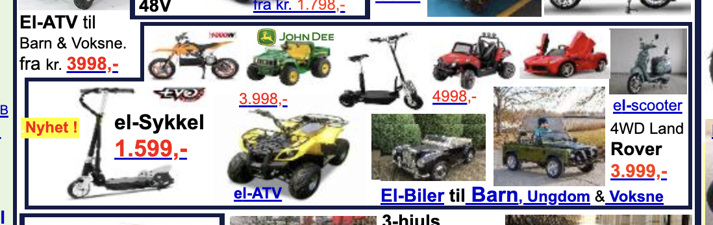

USER EXPERIENCE
When you first open the website as a regular person with no background in programming or coding, your eyes will somehow be irritated, because of how unorganized and cluttered things are, making the user experience unappealing.
The website is also not mobile-friendly. When I opened it using my cellphone, it is somehow hard to navigate. The website is also not in English, making it hard for me to understand.
However, if you look at it in a developer’s eyes. You’ll see a website that is very hard to create and tedious to do. A website that is done by a good programmer, or at least better than me by a huge margin.
One thing I noticed is that there’s a picture with 6 borders, like I have never seen anyone did that.

Overall, if you look at it aesthetically, it is really bad. But if you look at it with a developer’s eyes, you’ll appreciate it.
CONTENT
The website appears to be product-focused, with a large number of products and images displayed on the homepage.
The website also includes some descriptive text and product specifications, but this information is often presented in a cluttered and disorganized manner, which can make it difficult for users to find and understand. In terms of writing style, the content on the website often uses short sentences and bullet points, which can make it easy to scan and read quickly.
However, the writing can also be repetitive and overly promotional, with a heavy emphasis on the benefits of the products being sold. Overall, while the website does contain a large amount of product information, the presentation and organization of this content could be improved to make it more user-friendly and easier to understand.
GRID LAYOUT
The grid layout of the website appears to be based on a fixed-width grid, where elements are arranged in a predetermined number of columns and rows. The layout is divided into several sections, each containing multiple products or categories. The use of a grid layout can make it easier to organize and display a large amount of content, and it can also help to create a consistent visual structure throughout the website.
However, there are some issues with the grid layout on the website. One major issue is that the layout is not responsive, which means that it does not adjust to different screen sizes or devices. This can make the website difficult to use on mobile devices, and it can also lead to a cluttered and disorganized appearance on larger screens.
Overall, while the use of a grid layout can be effective for organizing and displaying a large amount of content, the implementation of the grid layout on the website could be improved to make it more responsive and user-friendly.